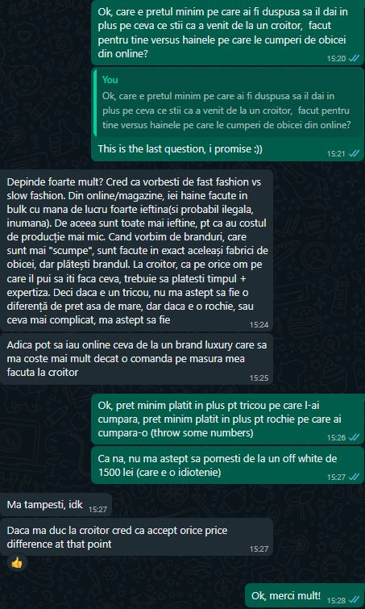
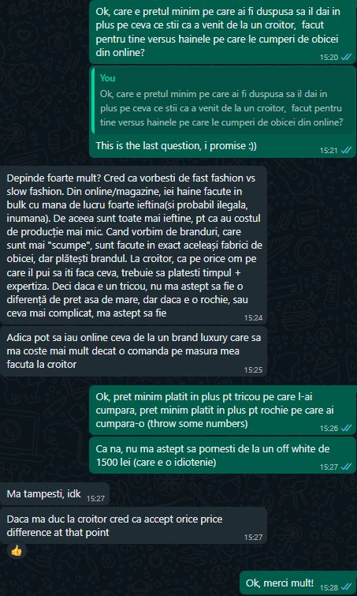

TailorMyStyle
When Shopping Fits Perfectly
When you order clothing online, there is the potential issue of the clothes not fitting upon arrival, requiring return. This can lead to a less-than-ideal user experience when shopping online for clothing, as the inconvenience of having to return items and place new orders can be frustrating and time-consuming, ultimately diminishing the overall satisfaction of the online shopping experience.
TailorMyStyle is an online marketplace whose central feature revolves around body measurements. This allows users to input their precise measurements, ensuring a better selection of clothes that are tailored to fit them accurately. This approach not only eliminates the uncertainty associated with sizing but also enhances user satisfaction by delivering a more personalized and convenient shopping experience.
Threads & Teamwork
-

Tănase Radu
Project Manager
-

Bîncă Andreea-Cristina
Product Owner
-

Gheorghe Delia-Teodora
Frontend Developer
-

Lazăr Elena
Backend Developer
-

Neagu Fabian-Florin
Frontend Developer
-

Alexandru-Lucian Gherghe
Backend Developer
Online Shopping, Uniquely Yours
This approach is particularly beneficial for a broad customer segment that includes individuals who value the convenience of online shopping but are often deterred by the uncertainty of sizing. It caters to those who have unique body shapes and sizes, making it especially appealing to individuals with non-standard proportions, those in-between standard sizes, or anyone who simply seeks a more precise fit. It offers customers a simple solution to shop from the comfort of their homes, as it offers a hassle-free, tailor-made shopping experience that caters to their specific needs and preferences.
Sizing Up the Competition
Our arena is no small stage; our competitors include major fast-fashion retail giants, which have established their presence in Romania: FashionDays, AboutYou, Modivo, and Zalando. Additionally, we share the market with other niche players specializing in custom formal attire, such as Filipcezar, Sarto, and AtelierDeCroitorie.ro
Unlike most of our competitors, who primarily rely on individual tailoring workshops, our platform presents a novel approach by centralizing the services of multiple providers. In addition, it empowers users to input their own precise measurements, meaning that each garment is truly tailored to the unique shape and dimensions of each individual.
Metrics that Measure Success
At the heart of our mission lies the desire to eliminate the frustration of ordering clothing, only to return it due to sizing issues. Additionally, we're committed to aiding retailers in streamlining their product return processes to cut costs. Therefore, a critical metric we focus on is the "Return Percentage." Our aspiration is to outperform our competitors and deliver a smaller product return rate.
Startups face an exciting challenge in drawing customers to their innovative solutions. That's why our next key metric revolves around "Conversion Rate per Source." Through skillful management of channels like organic searches, paid advertising, social media, and referrals, our goal is to captivate customers and offer them a firsthand experience of our remarkable solution.
Cart abandonment rates in the world of online fashion shopping pose a significant concern. This metric presents a vital challenge in the customer journey as potential buyers, including fast fashion enthusiasts, often demonstrate their intent by populating their carts but eventually do not complete the purchase. This highlights the need for us to prioritize user experience, competitive pricing, and the overall efficacy of our e-commerce platform as we seek to capture the attention and loyalty of fast fashion consumers. User-friendly interfaces, personalized recommendations, targeted incentives, and optimized checkout processes are the keys to retaining customers. The additional steps of adding body measurements to the user experience may discourage customers when browsing our application. As such it is essential to implement a friendly process of onboarding users into the world of tailoring.
Financial Threads
In order to keep a competitive edge, our strategic investment focus is distributed across several critical areas within our cost structure. Firstly, we recognize the importance of the technology and software development department. This investment is essential to create a flexible, intuitive, and user-friendly web application that aligns with our mission. Moreover, we acknowledge the essential role of a robust IT infrastructure investment. It is essential in providing our customers with a highly responsive and consistently available platform. We adopt a scalable approach, permitting additional investments as traffic increases.
In our pursuit of broader visibility, we assign resources for advertising and promotional materials. Our goal is to attract and retain a substantial customer base, thereby enhancing our competitive edge. Recognizing the value of constructive human interaction in customer support, we allocate a substantial investment of time to this domain. We aim to differentiate ourselves by delivering exceptional customer service that surpasses industry standards.
While our ultimate goal is to minimize product returns,they cannot be avoided entirely. As such, it is important to think about investing into the management of return policy and processes. Additionally, we factor in the costs associated with payment processing fees and the essential field of SEO.
These investments collectively reinforce our competitive stance and further our commitment to delivering a superior online fashion shopping experience.

Sizing for Earnings
The revenue model of our startup primarily hinges on a commission-based system. Retailers will retain autonomy over setting the prices of their products, while we will derive our revenue through a commission on each sale facilitated through our platform.
Customer Discovery
Speaking with different people we found out that the problem is relevant, but the customer segment we chose is too large. As such we need to think about a more narrow customer segment.
Data Collected
Female-23: Does order clothes online, never had issues with the clothes ordered for herself. Only once had a problem, when ordered clothes as a gift for someone. Has been to tailor for special occasion - ball. Liked the design she saw in a fashion house, tracked down the designer and went to the designer's workshop to get a tailored dress (even though it was far away). Highly customizable and liked the ideas the tailor suggested for modifying the dress.
Female-22: Only shops online because lack of time, patience and deceiving prices. Orders in bulk and returns clothes that don't fit. For any clothes that she liked and did not fit she set a stock alarm for when the desired size was in stock. Boyfriend's father is a tailor, so for any slight adjustments for clothes she reaches out to him. Does not have any tailored clothes because her boyfriend's father is no longer full time tailor due to low demand.
Female-22: Does not shop online at all. Needs to try on clothes to see if they fit and to test the quality of the material used (always looks for best price-quality products). Last clothing product ordered online was 8-10 years ago. Never had problems with size. The material was the issue. She has been to a tailor for special occasion. The tailor was a family friend, and that was the selling factor. Highly customizable dress.
Female-23: Mostly shops in store because of between-sizes issue, but has learned the average size for clothes in case she needs to order online. Never had the problem of needing to return a product. Has been to the tailor in middle school. Did not like the experience because of unpleasant behaviour from the tailors.
Female-23: Searches online for clothing but goes to shops to try them out before buying, due to inconsistent sizing across shops. Had problems with size differences at the same online shop. Had few problems with ordering online, most of them offered as hand-me-down to her friends, few returned. Has been to tailors for adjustments and for special occasions. Tailor was in another city, but she still went to it because of the design of the dress. Found the tailor through Instagram. Body measurements taken online, with help from the tailor through video call. Traveled to the tailor's workshop for adjustments.
Male-23: Buys clothes exclusively in physical shops due to sizing issues. Wants to try on before purchasing because he wants to look good in the clothes he wears. Never ordered online, uses online websites to browse the designs. Has been multiple times to a local tailor (referral from other acquaintances) for adjustments, last time summer 2022 for pair of jeans and a shirt, resulting in a perfect fit.
Male-23: Never buys clothes online. Wants to have the perfect fit and good material. Has favorite stores to go to. Does go to the tailor (his mom) for adjustments to jeans and shirts. Does not have any custom tailored attire. Not willing to pay extra for tailored clothes, if the clothes bought from the store fit well.
Female-22: She generally orders products online, but not clothes. She prefers to get clothes from the shop because she has problems with sizes depending on the size of the item. She feels that sizes generally differ from shop to shop. She has only been to the tailor to shorten her trousers.
Male-22: He rarely ordered his clothes online, mostly from abroad because he couldn't find unique pieces in the store. He prefers going to the shops because he has a problem with sizes. He would prefer custom or more unique pieces, but the cost of made-to-order products discourages him. He went to the tailor to have his suit pants shortened.
Conv 1
Conv 2

Conv 3
 

Conv 4

Conv 5
Conv 6
Wireframe
Homepage
Login Pages
Shop Page & Custom Size Popup
Product Page

Cart Page
Checkout Pages
Landing Page
The landing page for our product can be reached via this link: TailorMyStyle
User persona
Speaking with more people from the target customer segment we saw that the people that use online shopping platforms do so because they find it easier and faster than buying from physical shops. On the other hand, th reason people do not use ever online shopping platforms is because they had bad experiences with them because of inconsistent sizing. They also find shopping for clothes a chore, because most don't have the time to try on clothes in physical shops.
As such, we came up with the following persona : Antonia, a young lady who recently got a job as a marketing specialist at a big firm. The firm requests her presence in the office almost daily. Moreover, she interacts with a lot of people, so she needs to make very good first impressions.
We also came up with some user stories for this persona :
As a customer I want quick and easy access to purchasing clothes online so that I don't waste the free time I work for.
As a customer I want an easier way of finding clothes that fit so that I don't waste time and money trying to return the clothes that are not up to my standards.
User flow diagram
Market Research
Target market
When we talk about our targeted market it is important to mention from the beginning that according to studies it is forecasted that more than half of Romania’s population will use online commerce by 2025 [1]. Currently, only 45% of Romanians order online, although the Internet penetration rate is over 90. The ecommerce market in Romania has around 100 online stores that record over 1,000 orders per day. However, it is expected to grow up to three times in the coming years based on various digital transformation trends that will define local electronic commerce. [1]
In 2021, the online fashion Market in Romania was worth 894 millions of euros [2]. The projected growth of the Romanian Fashion eCommerce market anticipates reaching US$1,400.7 million by 2023, representing 17.6% of the total eCommerce market in Romania. This sector is poised for further expansion in the coming years and the expected compound annual growth rate (CAGR) from 2023 to 2027 is estimated at 1.0%, contributing to a forecasted market volume of US$1,456.4 million by 2027. [3]
Within the Fashion market, the ECDB identifies three distinct sub-markets: Apparel, Footwear, and Bags & Accessories. [3]
Competition and its market share
The online share refers to the proportion of the retail volume that is transacted via the Internet. It includes purchases via desktop PC, tablet or smartphone, both via website or app. Only retail of physical goods is taken into account. [3]
In the Romanian Fashion retail market, the online share is 35.0% and will increase by an average of 11.8% to 54.6% by 2027. [3]
In our journey of entering the targeted market we have to face competition from prominent fast-fashion retail giants with a well-established presence in Romania, including FashionDays, Answear, Bonprix, AboutYou, Modivo, and Zalando. Furthermore, our market landscape includes niche players focusing on custom formal attire, such as Filipcezar, Sarto, and AtelierDeCroitorie.ro.
In 2022, the leading online stores in the Romanian fashion market were FashionDays, eMAG, Epantofi, AboutYou, and H&M. FashionDays emerged as the market leader, generating revenues of US$245.6 million. Following closely was eMAG with sales reaching US$181.4 million, and Epantofi with US$78.3 million in sales. Collectively, these top three online stores held a substantial market share of 36.5% among the top 100 stores in the Romanian fashion market.
Potential market share (TailorMyStyle)
Embarking on a journey within the dynamic landscape of the Romanian online fashion market, we aim to forecast and project our potential market share over the next five years post-launch. In a rapidly expanding industry, our proactive approach seeks to capitalize on growth opportunities and contribute to the unfolding narrative of the online fashion scene in Romania.
Year 1:
A conservative estimate of market share, around 0.2%, considering the initiation of our market presence and a focus on brand awareness. Here, in the inaugural year, our primary focus lies in robust marketing initiatives and meticulous user engagement tracking on our platform.
Year 2:
A moderate increase in market share, ranging between 0.8-1.3%, as we enhance effective marketing strategies and gain initial customer trust. Apart from the acquisition phase, our focus should be switched in order to maintain the retention rate of our customers.
Year 3:
A significant growth in market share, reaching an estimated range of 1.5-1.6%, as we continue to build brand credibility and customer loyalty.
Year 4:
Continued steady growth, aiming for 2%, as our startup matures and becomes a more established player in the market.
Year 5:
Further consolidation and market penetration, with an estimated market share in the range of 3%, as we leverage positive customer feedback, refine our services, and explore additional growth opportunities.
With this plan, we aim to develop our presence in the online clothing retail market, as well as extend to deliver tailor-adjacent services to increase our market share and develop our product away from the big league players already established in the Romanian market.
In 2023, the online European market size of clothing retailing is 119B Euro, which sets the market share of our competitors to Zalando 11.7%(14B), H&M 5%(6B), SHEIN 3.75%(4.4B), Farfetch 1.7%(2B), Bon Prix 1.7%(2B), About You 1.7%(2B). Romania represents 2.35B Euro, out of which 35% comes from online. This sets the Romanian online fashion market size to 822.5M Euro (0.6% of the European market). This brings our competitors’ Romanian online market share to : Zalando (84M Euro), H&M (36M Euro), SHEIN (26.4M Euro), Bon Prix (12M Euro), About You (12M Euro).
Minimum Viable Product - MVP
Link to MVP
The MVP for our product can be reached via this link: TailorMyStyle

Further validation steps based on the data collected
Refining the Customer Segmentation: With the array of diverse personas we've identified, conducting additional interviews or surveys could help us pinpoint and narrow down the specific target segment. Our aim is to concentrate on those individuals who are most likely to derive substantial benefits from our MVP.
User Feedback on Solution
Engage in User Testing or Surveys: To ensure alignment between our proposed solution and user needs, we'll conduct user testing or surveys. This approach might involve showcasing wireframes or basic prototypes to gauge user interest and assess usability, thereby validating our solution against their actual requirements.
MVP Components and Justifications:
Considering the information gathered, an MVP for the online fashion marketplace includes:
Grid Layout Homepage: This feature offers a comprehensive view of all products, displaying crucial information like titles, visually appealing images, materials used, and a compelling message emphasizing personalized tailoring by local craftsmen according to individual measurements. This layout ensures a visually engaging and informative browsing experience, highlighting the uniqueness of the products and the customization aspect, enticing users to explore further.
Product Detail Page with 'Add to Cart': Upon clicking on a product, users are directed to a detailed page presenting comprehensive information about the item along with a convenient 'Add to Cart' button. This functionality simplifies the user journey by providing detailed product information at a glance and a clear call-to-action for immediate purchase intent.
Measurement Input Modal: This modal prompts users to input specific body measurements, including shoulder width, front length, bust, waist, sleeve length, and arm circumference in centimeters. Additionally, an instructional video assists users in correctly obtaining these measurements. By offering a user-friendly way to input measurements and providing guidance through the video, it ensures accuracy in customization, addressing user concerns about fit and personalized tailoring.
Shopping Cart and Order Summary: Clicking on the cart component presents users with a comprehensive view of their selected products, allowing them to modify the quantity and providing a summary of their order. This facilitates a transparent view of their selections, empowering users to review and modify their orders easily before proceeding to checkout.
Checkout Process with Contact Details: The checkout button guides users to a page where they can securely enter their contact information, enabling a smooth and secure transaction process. This step ensures a seamless transition from product selection to purchase completion, enhancing user experience and trust in the platform.
Motivations Behind the MVP Components
Tailored Experience: Components prioritize customization, catering to users seeking personalized clothing solutions, encouraging exploration and engagement.
Ease and Accuracy: Simplified input processes and mandatory fields ensure a user-friendly experience, addressing sizing concerns and enhancing shopping confidence.
Transparency and Control: Features offer clear order visibility, empowering users to review and modify selections before checkout, fostering trust in the platform.